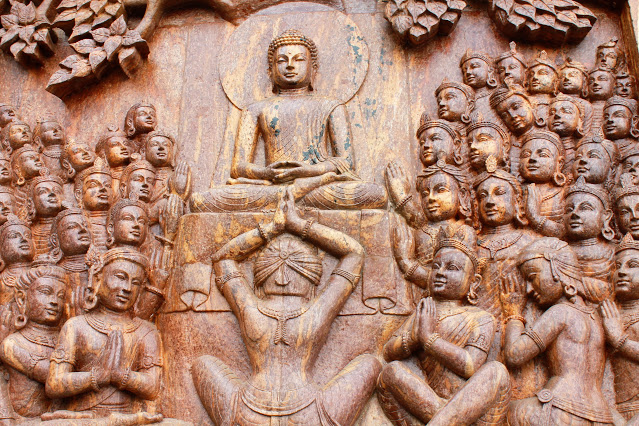
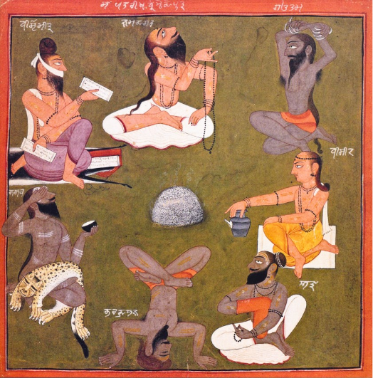
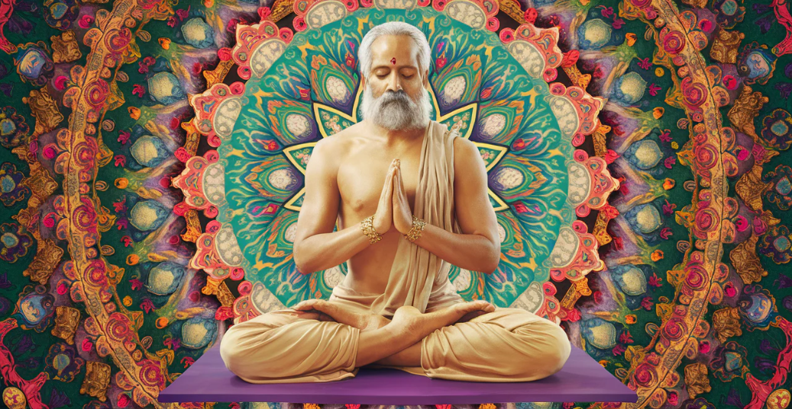

ยุคก่อนคลาสสิก
ต้นกำเนิดของโยคะย้อนกลับไปไกลกว่า 5,000 ปีในอารยธรรมลุ่มแม่น้ำสินธุ หลักฐานจากภาพสลักแสดงถึงการนั่งในท่าสมาธิ โยคะในยุคแรกเริ่มนี้ยังไม่ได้เน้นที่ท่วงท่า แต่คือปรัชญาที่ถูกกล่าวถึงในคัมภีร์พระเวท เป็นหนทางสู่การหยั่งรู้และเชื่อมต่อกับพลังจักรวาล
ยุคคลาสสิก
ยุคนี้ถูกนิยามโดย "มหาฤาษีปตัญชลี" ผู้รวบรวมหลักปรัชญาโยคะเป็นลายลักษณ์อักษรในคัมภีร์ "โยคะสูตร" ซึ่งได้วางรากฐานของ "อัษฎางคโยคะ" หรือองค์ประกอบ 8 ประการ เป็นเส้นทางที่เป็นระบบเพื่อควบคุมจิตใจและนำไปสู่การหลุดพ้น (สมาธิ)
ยุคหลังคลาสสิก
ปรมาจารย์โยคะในยุคนี้ได้เปลี่ยนมุมมองจากการควบคุมจิตใจมาสู่การให้ความสำคัญกับร่างกายมากขึ้น "หฐโยคะ" (Hatha Yoga) ได้ถือกำเนิดขึ้น โดยเชื่อว่าร่างกายคือวิหารของจิตวิญญาณ การฝึกอาสนะ (ท่าโยคะ) และปราณายามะ (การควบคุมลมหายใจ) จะช่วยชำระร่างกายและจิตใจให้บริสุทธิ์เพื่อเตรียมพร้อมสู่สมาธิ
ยุคใหม่

โยคะได้เดินทางจากตะวันออกสู่ตะวันตก โดยปรมาจารย์อย่าง "สวามี วิเวกานันท์" ในยุคนี้โยคะถูกปรับให้เข้ากับโลกสมัยใหม่มากขึ้น โดยเน้นไปที่ประโยชน์ด้านสุขภาพกายและใจ การลดความเครียด และการสร้างความแข็งแรงยืดหยุ่น ทำให้โยคะกลายเป็นที่นิยมไปทั่วโลกและแตกแขนงออกเป็นหลากหลายสไตล์อย่างที่เราเห็นในปัจจุบัน